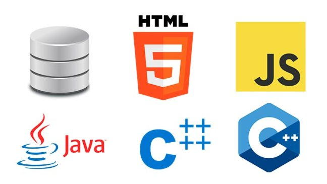

Evolución de los paradigmas de los lenguajes de programación
Por: Brandon Vega
¿Qué son?
Los paradigmas en los lenguajes de programacion son metodos para realizar computos y organizar las tareas que realizara un programa.

¿Para qué sirven?
Nos sirven para resolver uno o varios problemas computacionales. Dependiendo del paradigma, nos será más sencillo resolver sierto tipo de problema.
Scrum
Scrum es el nombre que se le da a marcos de desarrollo agiles para la programacion. Estan caracterizados por:
1) Adoptar estrategias de desarrollo incremental
2) Solapamiento de las fases del desarrollo, en lugar de realizar una tras otra.
Extreme programing
Extreme programing es un framework de desarrollo agil de software. Este apunta a crear software de alta calidad de manera rapida.

Bibliografia:
https://es.wikipedia.org/wiki/ Lenguaje_de_programaci%C3%B3n
http://www.alegsa.com.ar/Diccionario/ C/ 23327.php
https://en.wikipedia.org/wiki/ Extreme_programming
https://es.wikipedia.org/wiki/ Scrum_(desarrollo_de_software)